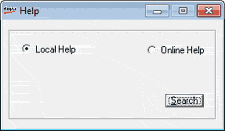
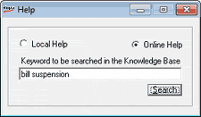

Local Help option provides you access to the comprehensive help manual available in your application folder. Online Help allows you to access the Knowledge Base maintained by Tally Solutions.
How to reach: Help > Shoper Help
The Help window is displayed as shown.

Local Help: Select to open the help manual offline.
Online Help: Select to get online help from the Knowledge Base.

Keyword to be searched in the Knowledge Base: Enter the keyword for which you are seeking help.
Note: By default, in online help the keyword entered will be searched in the Knowledge Base with Shoper POS as Product and All Words as Match. You can change the options in the Knowledge Base according to your requirements.